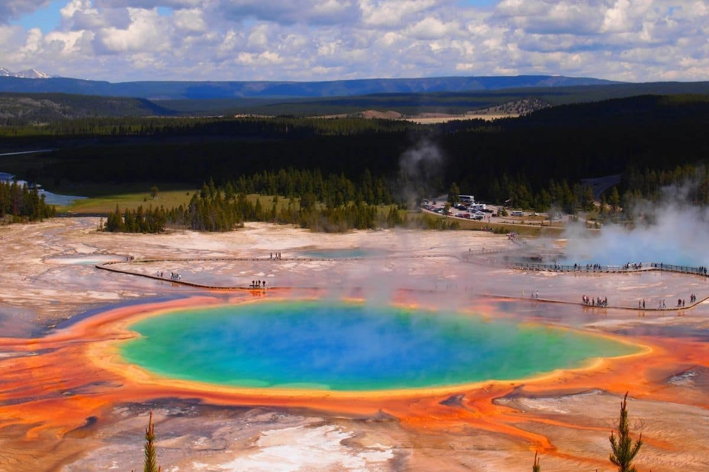
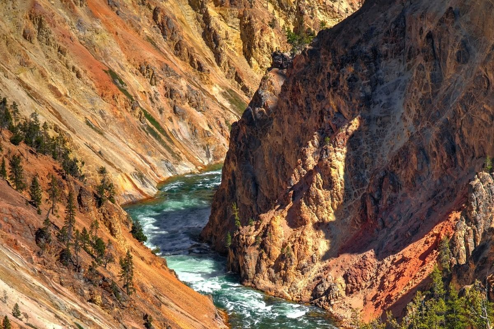
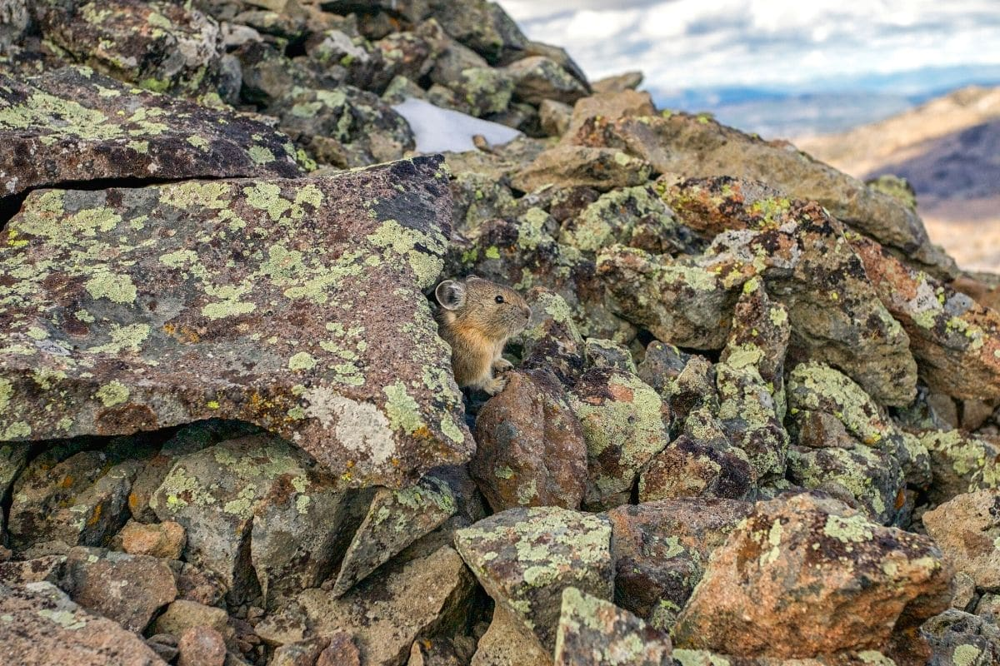
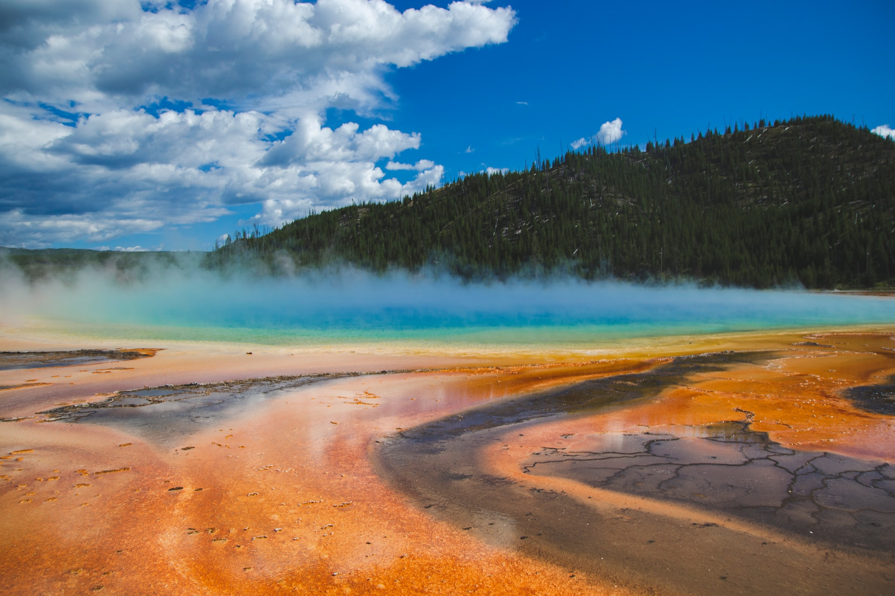

National Parks Travel Planner
Locations
Now, to get to what you're actually here for. The park! Some travelers enjoy the hikes, and some enjoy just driving around to the prettiest locations the park has to offer. Whichever your preference, this website will have a spot for you. We will provide you with shorter trails, more difficult trails, and where the most famous natural springs are. We want you to enjoy your time at this famous parks as much as possible!
Hiking Trails

Easy Trail: Grand Prismatic
Distance: 1.5 miles Elevation: 200 feet Time: 45 minutes Difficulty: Easy Trail Type: Out and back Area of Park: Midway Geyser Basin Trailhead: Fairy Falls Trailhead
Moderate Trail: North Rim
Distance: 6.4 miles Elevation: 675 feet Time: 3 hours Difficulty: Moderate Trail Type: Out and back Area of Park: Grand Canyon of the Yellowstone Trailhead: Parking area at the start of South Rim Drive
Challenging Trail: Avalanche Peak
Distance: 4.5 miles Elevation: 2,070 feet Time: 3 hours 30 minutes Difficulty: Strenuous Trail Type: Out and back Area of Park: Yellowstone Lake Trailhead: Avalanche Peak Trailhead
Sightseeing

Grand Prismatic Basin
Brightly-colored hot spring, the result of algae that live in the water.
Yellowstone Grand Canyon

Beautiful green and tree filled canyon with a fast-flowing river running through.
Old Faithful

A popular geyser located in the Geyser Country region of Yellowstone National Park.